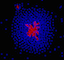

|  |
Self-Organized Sorting inspired in Chemitaxis and Gas ParticlesBy Carlos Badenes |
The sorting of heterotypic cell populations is produced by a variety of inter-cellular actions, e.g. differential chemotactic response, adhesion, rigidity, and motility.
Via a process called chemotaxis, living cells respond to chemicals released by other cells into the environment
The algorithm was implemented based upon the description in Self-Organized sorting of heterotypic agents via a chemotaxis paradigm by Linge B., Manolya E., Peter I. and David E.